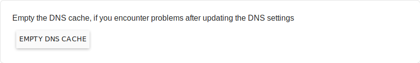
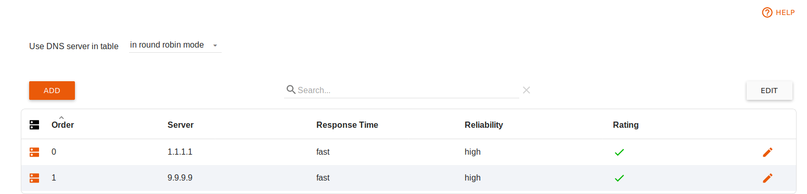

Deutsch | English
eBlocker Help > Knowledge Base > eBlocker Menu
eBlocker Base ✓ / eBlocker Pro ✓ / eBlocker Family ✓
This page is divided into the following sections:
If you enable this feature, you can use your eBlocker to distribute DNS requests to a list of different DNS servers or have them resolved over the Tor-Network.
eBlocker Pro and Family customers will benefit from the domain blockers after activating this function.
There are three different options available to you.
Internet Provider
The setting of your local network is used here. This means that the DNS server is used, which you have stored in your router configuration.
Tor Network
Here, the DNS requests are routed through the Tor network and passed to a DNS server at the Tor Network starting point. Make sure Tor is available. You can check this in the IP Anonymization > Tor Network menu.
DNS requests over the Tor Network may take longer to complete.
Custom list external DNS Server
With this option you can store a list of DNS servers. This list can then be processed by the eBlocker in order of availability or in random order. You can create the individual DNS servers in the DNS Server Custom List tab.
DNS cache
The eBlocker uses an internal cache for DNS queries. In rare cases, emptying the cache can resolve problems if changes have been made to the settings.

Here you can create a list of DNS servers from external providers you trust.

Enter the IPv4 address of the desired DNS server directly using the Add button. To remove an entry, select Edit, select the line and select Remove x Entries.
The eBlocker DNS Server can be used to create your own meaningful entries for the home network. This allows you to name controllable devices in your home network via a web interface and call them up more quickly.

Instead of setup.eBlocker.com or its IP address, the eBlocker can then be reached under eblocker.box, for example.